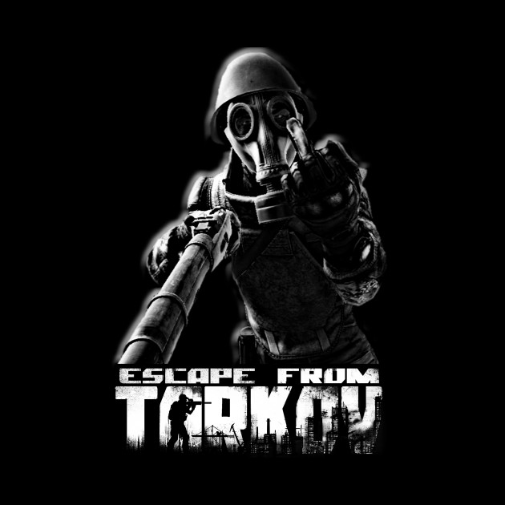
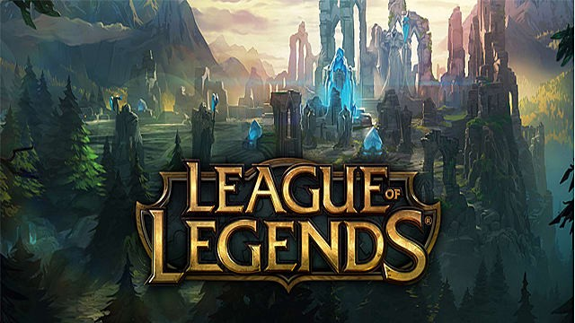

TarkovAz Escape from Tarkov egy kemény és reális online first person akció-RPG, MMO funkciókkal, amelyeket az orosz szentpétervári székhelyű játékfejlesztő, a Battlestate Games fejlesztett ki. A kitalált Norvinsk régióban, az Oroszország és Európa közötti határon elhelyezkedő Tarkov metropolisz a Szerződés Háborúinak köszönhetően anarchiába zuhant. A korábban nyüzsgő város volt, amelyet rivális versenytársak, a korábbi magán katonai erők és a fekete ops egységek csapnak fel. Közöttük van a rejtekhelyed, és a menekülés a szabad világba Tarkov mélyéből. A tarkov saját weboldala |
 |
League of LegendsA League of Legends (rövidítve: LoL) valós idejű stratégiai játék, illetve online többjátékos csatamező, melyet a Warcraft III: The Frozen Throne videójátékhoz készült Defense of the Ancients (röviden DotA) mod ihletett. A játék fejlesztője és egyben kiadója a Riot Games; Kínában a Tencent Holdings forgalmazza. A league of Legends hivatalos weboldala |
 |
| Játék | Játék típus | Kiadás dátuma | Játékosok száma |
|---|---|---|---|
| League of Legends | Online pvp MOBA | 2009. október 27 | 100 milliónál több |
| Escape from Tarkov | Online akció RPG MMO elemekkel | 2017. július 27. | kb. 10000 online játékos egyidőben, a pontos szám nem publikus |